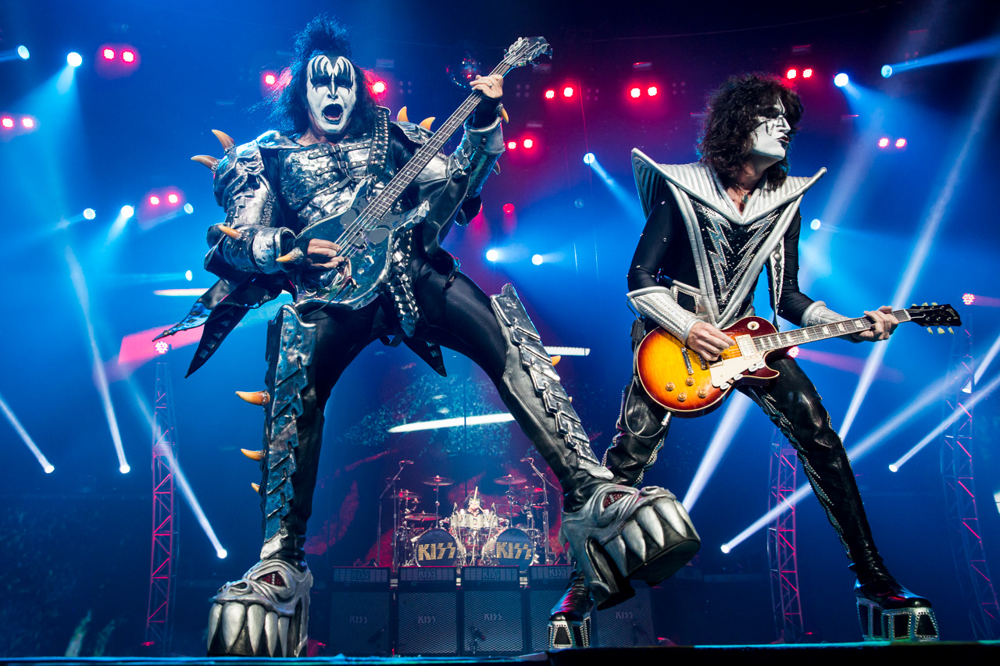

<section class="band-picture mt-5" id="about">
    
    <div class="band-picture-content visible">

        <h2 class="chunk text-center">
            <span>
                About Kiss
            </span>
        </h2>
        <p>Kiss (often stylized as KIϟϟ) is an American rock band formed in New York City in January 1973 by Paul
            Stanley, Gene Simmons, Peter Criss, and Ace Frehley. Well known for its members' face paint and stage
            outfits, the group rose to prominence in the mid-to-late 1970s with their elaborate live performances, which
            featured fire breathing, blood-spitting, smoking guitars, shooting rockets, levitating drum kits, and
            pyrotechnics.
        </p>
        <p>

            The band has gone through several lineup changes, with Stanley and Simmons the only remaining
            original members. The original and best-known lineup consisted of Stanley (vocals and rhythm guitar),
            Simmons (vocals and bass), Frehley (lead guitar and vocals), and Criss (drums and vocals).
            With their make-up and costumes, they took on the personae of comic book-style characters: the Starchild
            (Stanley), the Demon (Simmons), the Spaceman or Space Ace (Frehley), and the Catman (Criss). Due to creative
            differences, both Criss and Frehley had departed the group by 1982.
        </p>
    </div>
</section>